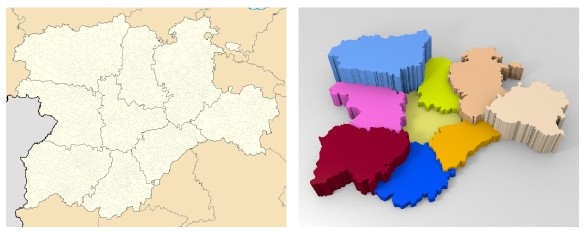

Introducción a Blender
Imagotipo de Blender // Licencia: Copyright de NaN Holding B.V. cedido a Blender Foundation
Cada vez son más las herramientas informáticas disponibles para el profesorado con las que crear materiales educativos atractivos. El 3D es un fenómeno actual que se vincula a estéticas modernas y que el profesorado no debe dejar escapar. Con los conocimientos adecuados nuestros materiales pueden multiplicar su capacidad comunicadora hasta límites insospechados, además de otorgarles cualidades estéticas fuera de toda duda.
Fijémonos en este mapa que descargamos libremente desde Wikimedia Commons. Al encontrarse en el formato adecuado el paso entre la primera imagen y la segunda (gráficas de población, renta per cápita, natalidad...) es fruto de unos pocos minutos de trabajo con Blender.

Izquierda: Mapa de Castilla y León en formato SVG // Autor: Miguellen // Licencia: CC-BY-SA-3.0 (Creative Commons)
Sin duda este software brinda excelentes posibilidades y algunas de ellas se desarrollan a lo largo de Blender: 3D en la Educación cuya principal finalidad es dar al profesorado las pautas necesarias para adquirir un nivel de conocimiento medio del programa que le permita después ahondar en sus entresijos.
Objetivos para Blender: 3D en la Educación
- Situar Blender en el entorno del Software libre.
- Descargar, instalar y configurar asuntos fundamentales del programa.
- Modelar con las técnicas 3D más importantes.
- Asignar materiales y texturas.
- Iluminar la escena.
- Conseguir efectos útiles para añadir a los materiales educativos.
- Hacer animaciones para crear materiales didácticos.
- Crear recorridos virtuales interactivos y simulaciones físicas.
¿Qué esperas de Blender?